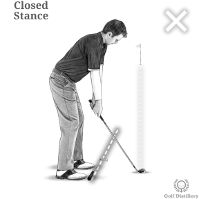
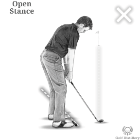
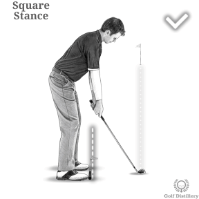
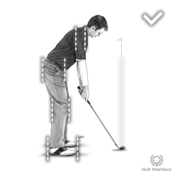
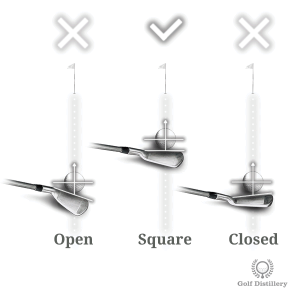

골프의 올바른 정렬

--------------------------------------------------------------------------------------------------------------
정렬을 확인하려면 멀리 있는 목표물을 선택하고 평소처럼 공을 향해 설정하십시오. 발가락 라인을 따라 클럽을 놓고 뒤로 물러서서 클럽이 가리키는 곳을 확인하십시오.

클럽이 타겟을 직접 가리키거나 타겟의 오른쪽을 향하는 경우 스탠스를 닫힌 상태 라고 합니다 .
--------------------------------------------------------------------------------------------------------------

클럽이 타겟의 왼쪽보다 훨씬 왼쪽을 가리키면 스탠스를 오픈 이라고 합니다 .
--------------------------------------------------------------------------------------------------------------

클럽은 타겟의 왼쪽과 평행 해야 합니다 (발을 따라 있는 선과 볼에서 타겟까지의 라인이 2개의 기차 트랙과 같다고 상상해 보세요). 이것은 정사각형 자세입니다.
--------------------------------------------------------------------------------------------------------------

기억하세요. 무릎, 엉덩이, 어깨가 발과 일직선이거나 평행해야 합니다. 가능하다면 친구에게 셋업 자세를 취하는 동안 엉덩이와 어깨를 가로질러 골프 클럽을 잡도록 하세요. 한발 물러서서 이 클럽이 어디를 가리키는지 확인하십시오.
--------------------------------------------------------------------------------------------------------------

골프공을 어드레싱할 때 클럽 페이스의 각도를 잊지 마십시오. 이것은 공에서 목표물까지의 선과 직각을 이루어야 합니다.
--------------------------------------------------------------------------------------------------------------